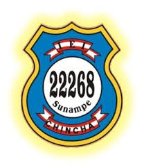

ESCUELA PRIMARIA N° 22268 EX - 5623: RESEÑA HISTÓRICA

Reseñar los antecedentes históricos de una Escuela tan antigua y con tanto prestigio como es la Escuela 22268
Ex-5623 resulta bastante dificil, sobre todo por la carencia de archivos escritos. Sin embargo, los ricos testimonios
orales de respetados ciudadanos e intelectuales nos permite afirmar que este Centro Educativo nace allá por el año 1894,
ante la necesidad de contar con este servicio por parte de quienes moraban en los alrededores de las acequias de Michico,
La Palma, El Sauce y Desaguadero, conformantes del pueblo de Sunampe.
La hoy Escuela 22268 es creada mediante una Ordenanza Municipal del Concejo Provincial de Chincha con la denominación de
Escuela Municipal de Varones, siendo uno de los catorce Centros Educativos que el entonces municipio puso en marcha en toda
la provincia, asumiendo la Dirección con el Cargo de Preceptor Principal el educador Don Atanacio Atúncar, atendiendo a trece
educandos. Su ubicación exacta era el Pago de Acequia Grande, acogiendo en sus primeros años a escolares de las Tomas de La Palma,
Michico, Del Puente, De Yataco, Del Corriente, Del Alto, De Chocuta, Del Carrizo, Guayabo, Membrillo, Calle Ferrocarril, etc.
En 1921 esta Escuela pasa a manos del Ministerio de Educación Pública con la denominación de Escuela
Fiscal Mixta Nro. 5623 albergando en sus aulas a 46 alumnos procedentes de las Tomas antes mencionadas
y de otras zonas como Pilpa, Lomo Largo, Huaca Grande, Pampa de Canelo, La Victoria, Acequia Grande, El Cote,
Canchanmaná entre otros, tal como lo certifican algunos documentos rescatados. Tenía por local una infraestructura
de tres aulas, construidas con adobones, techo de cañas y madera, edificada en un terreno cedido por la familia
Atúncar, la que se ubicaba en lo que hoy es la Avenida Primavera (Salón Comunal), la que sirviera de local hasta 1977.
Este terreno con su antigua edificación fue canjeado por quienes dirigian la Escuela en 1984, los cuales lo cedieron a
la Municipalidad a cambio de la construcción de dos aulas en su actual terreno.
Ante el incremento progresivo de la población escolar y la consiguiente carencia de aulas, en 1968 su Director Juan Antonio
Del Rio Cano, con el apoyo de las autoridades, logra la expropiación de un terreno de diez mil metros cuadrados, perteneciente
a los herederos de Don Alonso Fressa Alfinito tasándose su valor en treinta mil soles oro, dinero que fuera cancelado por el Consejo
Distrital de Sunampe. Al año siguiente el Ministerio de Educación destina ochenta mil soles y se edifican las tres primeras aulas,
trasladándose en 1971 las tres primeras secciones de su antiguo local de la Avenida Primavera, empezando a funcionar em dos locales: el
antiguo de la Avenida Primavera y el nuevo en lo que se denominaba Toma de Jacobo, Pago de Acequia Grande(Paso de Gomez).
En 1973 la CRYDI construye dos aulas en 1892 CARE edifica tres aulas y lo implementa. En mi 1984 la Municipalidad Distrital de Sunampe
construye dos aulas (mediante canje) en 1989 el Padre Blaiss Mac Quarry apoya la construcción de las dos últimas aulas; debiéndose mencionar
que en 1982 COOPOP inicia la construcción de los actuales servicios higiénicos dejándolo inconcluso, siendo terminado por la APAFA.
En 1971, mediante Resolución Ministerial Nro° 996 de fecha 30/03/1971 se modifica el número de esta Escuela, denominándose desde entonces Escuela
Primaria Nro° 22268 hasta la fecha.
La disciplina y calidad de enseñanza impartida en la Escuela 22268 Ex - 5623 han hecho que los padres de familia de alejados caseríos del distrito
de Sunampe prefieran este Centro Educativo, logrando ubicarlo en el Primer lugar de preferencia, siendo la única que funciona en dos turnos. Funcionando
en el presente año 199, diecisiete secciones donde se educan 506 alumnos de ambos sexos. Además de los profesores de aula, este Centro Educativo cuenta
con un director, una profesora de Educación Física y dos personal de limpieza. En su amplia infraestructura se ubican once aulas de material noble, un
ambiente para la Dirección, una losa deportiva, un estrado y tribuna, un amplio patio y extensas áreas verdes libres donde a diario juguetean los niños con
la seguridad que le el cercado perimétrico. Cuenta además con su propia bandera de guerra, un taller de música folclórica, diez máquinas de costura recta que
no se ponen operativas por falta de un ambiente adecuado.
La Escuela 22268 del sector Paso de Gómez, distrito de Sunampe, demuestra con hechos en la práctica la supremacia sobre los demás, siendo el principal animador
de los desfiles, concursos, eventos deportivos y demás certámenes competitivos, lo que lo hace poseedor de los mayores lauros entre los Centros Educativos de Sunampe,
por eso con orgullo lucen el membrete de ser la Escuela más antigua, de mayor población escolar y de mayor prestigio de Sunampe.
Cabe indicarse, finalmente, que la Escuela 22268 celebra su aniversario el 15 de setiembre recordando el día que se concretiza la expropiación del terreno donde
se ha edificado su infraestructura actual.